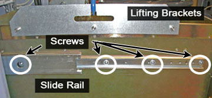

Operating Documentation
Direction 5670000, Rev# 1
Module Version 3.0, Version Date 8/19/08
Operating Documentation |
| ||||
| possible personal injury or equipment damage! | ||||
| the module could fall when using the lift tool. | ||||
| before putting weight on the hoist chain, be sure that the links are aligned properly. this will help keep the chain from binding up, or becoming kinked, which is nearly impossible to correct when the chain is under tension. |
| Condition | Reference | Effectivity |
|---|---|---|
The power in the cabinet needs to be off. | - | - |
Before disconnecting any coolant lines on the front of the XRFD unit, shut down the Power electronics PuMP (PPMP) at the Heat Exchange Cabinet (HEC) . | - | - |
The power in the cabinet needs to be off. Perform the LOTO for the PGR PDU/Gradient Sybsystem before the XRFD or XRFD PS unit is replaced.
Before disconnecting any coolant lines on the front of the XRFD unit, shut down the Power electronics PUMP (PPMP) at the Heat Exchange Cabinet (HEC) by pressing ▲ and F3simultaneously. Then, switch the PPMP circuit breaker (CB) to OFF.
Before setting up the hoist kit, remove the eXtreme Gradient Power Supply (XPS) J9 connector to properly remove the main lifting beam (see Illustration 2).
Perform the Hoist Service Kit and Lifting Accessories procedure to set up and secure the hoist.
Remove tie wraps that hold the power cable (see Illustration 3). The cable goes underneath the XRFD and along the side of the cabinet to the top of the Power Distribution Module (PDM) .
Illustration 3: Tie Wraps on Power Cable

Disconnect the power cable at the terminal, the cables on the front of the XRFD, and disconnect the coolant lines. Carefully move the cables and lines to the side of the cabinet, allowing the surrounding area to be free from any obstruction of movement for when the amplifier will be pulled out (see Illustration 4).
Unscrew the eight attachment screws (see Illustration 5).
Using the two front handles, carefully slide out the XRFD unit.
Attach the lifting brackets to both sides of the XRFD. The lifting brackets can be found in the XRFD FRU crate (see Illustration 6). The attachment screws are captive screws and remain with the lifting brackets.
Illustration 6: Inside FRU Crate - Lifting Brackets

Hook the winch and spreader bar from the hoist kit to the lifting bracket. Ratchet the winch to tighten the chain (see Illustration 7).
With the XRFD unit being supported by the hoist kit, unscrew the four screws and remove the slides rails from both sides (see Illustration 8).
Illustration 8: XRFD Slide Rails

The FRU is packaged in a wooden crate. For the XRFD, there are four parts to the FRU crate. Remove the top of the wooden crate and turn it on its base. The XRFD being removed can be placed into the top. Roll the top underneath the XRFD (see Illustration 9). Lock the wheels so that the container does not move.
Illustration 9: Base of FRU Crate

Ratchet the winch to lower the XRFD into the package.
Remove the hook from the lifting bracket.
Unscrew the lifting brackets from the sides of the XRFD. Roll the removed XRFD to the side.
Remove the center sections of the FRU crate.
Remove the shipping screw from each side of the XRFD FRU (see Illustration 10).
Illustration 10: Shipping Screw on XRFD FRU

Bring the FRU to the front of the cabinet (see Illustration 11). Attach the slide rails to the FRU.
Attach the lifting brackets to the sides of the new amplifier.
Attach the new XRFD lifting brackets to the winch and spreader bars.
Ratchet the winch to tighten the chains and begin lifting the unit. Slide out the rail a short amount to gauge how high to lift the new XRFD. The XRFD slide rails and the cabinet slide rails must align for correct insertion.
When the slide rails are aligned, pull the slide rails out a short distance to get each side started. Once both of the slide rails are attached, pull the slide rails on to the FRU until you hear a click. This click is a signal that the unit is docked in the rails. Ensure the XRFD is secure on the rails
Unhook the winch and spreader bars from the lifting brackets. Remove the lifting brackets from the sides of the new XRFD.
Slide the XRFD into the cabinet completely.
Attach the XRFD to the cabinet using the front eight attachment screws (see Illustration 5).
Reconnect the cables and coolant lines to the XRFD.
Disassemble the hoist kit. Return the main lifting beam to the PGR cabinet. Once the beam is secure, reconnect the XPS J9 connector. Return the support tube to the HEC.
Proceed to Finalization, Step 1.
The power in the cabinet needs to be off. Perform the LOTO for the PGR PDU/Gradient Sybsystem before the XRFD or XRFD PS unit is replaced.
Before disconnecting any coolant lines on the front of the XRFD unit, shut down the Power electronics PuMP (PPMP) at the Heat Exchange Cabinet (HEC) . Press ▲ F3 simultaneously to stop the pump. Then, switch the PPMP circuit breaker (CB) to OFF.
Before setting up the hoist kit, remove the eXtreme Gradient Power Supply (XPS) J9 connector to properly remove the main lifting beam (see Illustration 2).
Perform the Hoist Service Kit and Lifting Accessories procedure to set up and secure the hoist.
Remove tie wraps that hold the power cable. The cable goes underneath the XRFD and along the side of the cabinet to the top (see Illustration 3).
Disconnect the power cable at the terminal, the cables on the front of the XRFD PS, and disconnect the coolant lines. Carefully move the cables and lines to the side of the cabinet, allowing the surrounding area to be free for when the PS unit will be pulled out (see Illustration 4).
Unscrew the eight large screws that attached the XRFD to the cabinet, the four screws that attach to the manifold, the twenty-two faceplate screws, and the two BNC locking nuts (see Illustration 12).
Illustration 12: XRFD - All Screws

Remove the XRFD PS faceplate. Once the faceplate, is pulled away from the unit, conduct the following steps:
Slide out the XRFD PS unit.
Attach the lifting brackets to both sides of the XRFD PS. The lifting brackets can be found in the XRFD PS FRU crate (see Illustration 6). The attachment screws are captive screws and remain with the lifting brackets.
Hook the winch and spreader bar from the hoist kit to the lifting bracket (see Illustration 15). Ratchet the winch to tighten the chain.
The FRU is packaged in a wooden crate. For the XRFD PS, there are three parts to the FRU crate. Remove the top of the wooden crate and turn it on it's base. The XRFD PS being removed can be placed into the top. Roll the top underneath the XRFD PS. Lock the wheels so that the container does not move.
Ratchet the winch to lower the XRFD PS into the package.
Remove the hook from the lifting bracket.
Unscrew the lifting brackets from the sides of the XRFD. Roll the removed XRFD PS to the side.
Remove the center section of the FRU crate.
Remove the shipping cover from the XRFD PS FRU.
Take the shipping cover and attach to the top of the removed XRFD PS FRU.
Bring the FRU to the front of the cabinet and attach the lifting brackets to the sides of the new power supply.
Attach the new XRFD PS lifting brackets to the winch and spreader bars.
Ratchet the winch to tighten the chains and begin lifting the unit.
Place the XRFD PS into the XRFD.
Unhook the winch and spreader bars from the lifting brackets. Remove the lifting brackets from the sides of the new XRFD PS.
Slide the XRFD PS into the XRFD. Once the XRFD PS is completely in the XRFD, conduct the follow steps:
Attach the XRFD faceplate.
Reconnect the cables and coolant lines to the XRFD. For the power cable, use the tie wraps along the inner edge of the cabinet and along the top so that the cable is safely placed out of the way.
Attach the XRFD to the cabinet using the front eight attachment screws.
Disassemble the hoist kit. Return the main lifting beam to the PGR cabinet. Once the beam is secure, reconnect the XPS J9 connector. Return the support tube to the HEC.
Proceed to Finalization, Step 1.
Restore the power using the LOTO for the PGR PDU/Gradient Sybsystem.
Turn on the PPMP CB at the HEC. Start the pump by pressing ▲ and F3 simultaneously.
If the complete XRFD was replaced, calibrate the XRFD.
Remove coolant from the XRFD unit using the manual coolant removal tool (see Coolant Draining).
After attaching the center sections of the FRU package to the removed FRU unit base, attach the top of the FRU crate to prepare the FRU for return.